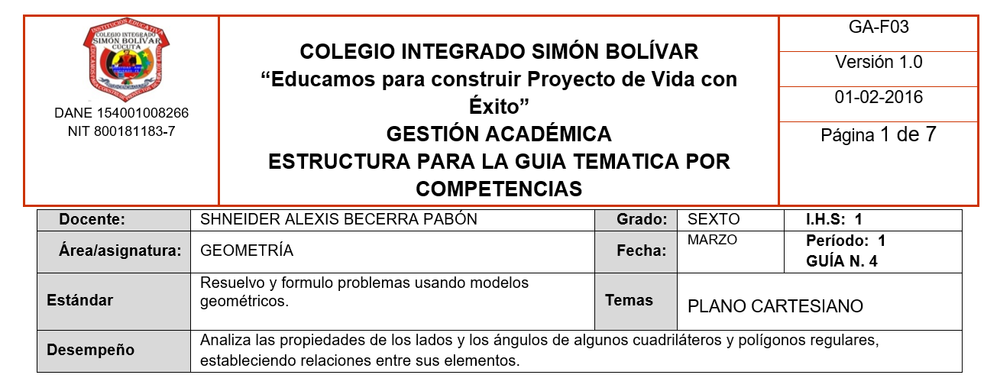
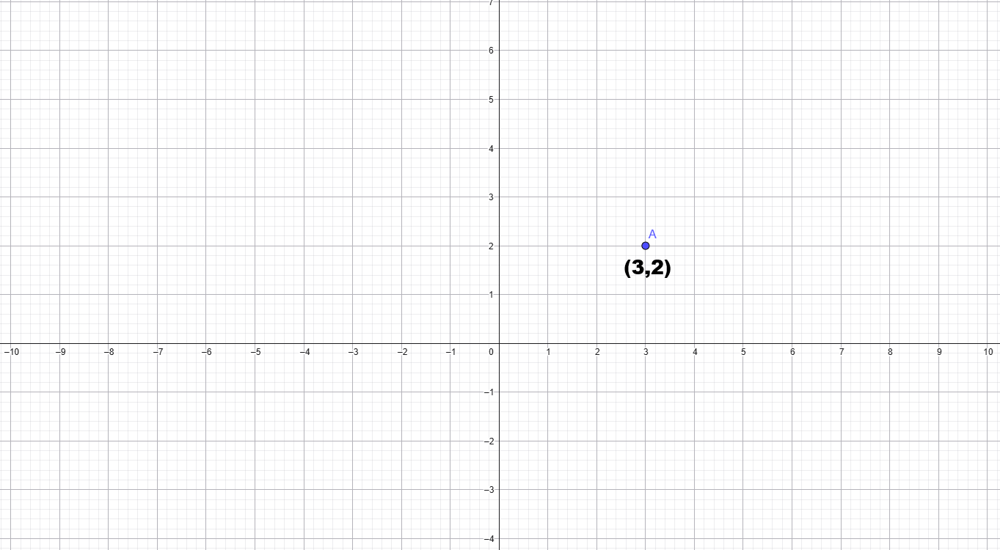

6°

Plano cartesiano – ubicación de puntos y lectura básica
EXPLORACIÓN
Observa la imagen
![imagen educativa en fondo blanco con una cuadrícula clara y simétrica. Características obligatorias: Líneas horizontales y verticales formando cuadrícula. Dos líneas centrales más gruesas (una horizontal y una vertical). La intersección central marcada con un pequeño punto negro. Sin etiquetas de eje X o eje Y. Sin números. Sin texto. Sin flechas. Proporción cuadrada o 16:9. Líneas gris claro para cuadrícula. Líneas centrales negras y ligeramente más gruesas. Diseño limpio y minimalista. Alta resolución para proyección. El objetivo es que el estudiante observe sin recibir aún terminología formal.](content/resources/20260217080416621YBB/3-1.png "imagen educativa en fondo blanco con una cuadrícula clara y simétrica.")
Responde:
📝 En tu cuaderno escribe:
Exploración – Plano cartesiano
- ★ ¿Qué observas en la imagen?
- ★ ¿Qué representan las líneas horizontales?
- ¿Qué representan las líneas verticales?
- ¿En qué punto se cruzan las dos líneas más gruesas?
- ¿Has visto algo parecido en mapas o videojuegos? Explica.
Situación cotidiana
Imagina que el colegio tiene un plano dividido en cuadras.
Para ubicar un árbol específico necesitas indicar su posición exacta.
Responde:
6. ★ ¿Cómo podrías dar una ubicación precisa usando números?
7. ¿Sería suficiente decir “está hacia la derecha”? ¿Por qué?
No escribas definiciones todavía.
ANALIZA
Observa nuevamente el plano.

📝 En tu cuaderno escribe:
Analiza
- ★ ¿Qué sucede cuando avanzas hacia la derecha desde el punto central?
- ★ ¿Qué sucede cuando avanzas hacia arriba?
- ¿Qué ocurre si avanzas hacia la izquierda?
- ¿Y si avanzas hacia abajo?
- ¿Crees que cada punto puede describirse con dos números? Explica.
Exploración guiada
Imagina que desde el punto central avanzas:
- 3 unidades hacia la derecha.
- 2 unidades hacia arriba.
6. ★ ¿Dónde quedarías ubicado?
7. ¿Cómo podrías escribir esa ubicación de forma abreviada?
No escribas aún reglas formales.
CONOCE ALGO NUEVO
El plano que observaste se llama Plano Cartesiano.
Está formado por:
- Un eje horizontal llamado eje X.
- Un eje vertical llamado eje Y.
- Un punto donde ambos se cruzan llamado origen (0,0).
![Generar un diagrama matemático vectorial (tipo SVG / diagramático) en fondo blanco, con cuadrícula perfectamente regular. Estructura obligatoria (cuatro cuadrantes): Plano cartesiano completo con ejes X y Y perpendiculares, cruzándose exactamente en el origen. Cuadrícula con unidades cuadradas perfectas (misma escala en ambos ejes). Numeración visible en ambos ejes desde -4 hasta 4, incluyendo el 0. Marcas de unidad exactamente en cada entero. Flechas en los extremos positivos de ambos ejes. Etiquetas formales: “Eje X” centrado hacia el extremo derecho del eje horizontal. “Eje Y” centrado hacia el extremo superior del eje vertical. “Origen (0,0)” apuntando con una flecha fina al punto de intersección exacta. Punto exacto (2,3): Marcar un punto negro sólido exactamente en la intersección de x = 2 y y = 3. Etiqueta “(2,3)” cerca del punto sin desplazarlo. Restricciones: Prohibido usar perspectiva o inclinación. Prohibido deformar la cuadrícula. Estilo limpio, matemático, líneas rectas perfectas. No incluir fórmulas. No incluir texto adicional. Proporción 16:9, alta resolución. Verificación interna obligatoria: El punto (2,3) debe estar exactamente en la intersección de la vertical x=2 y la horizontal y=3.](content/resources/20260217080416621YBB/3-3.jpg "Generar un diagrama matemático vectorial (tipo SVG / diagramático) en fondo blanco, con cuadrícula perfectamente regular. Estructura obligatoria (cuatro cuadrantes): Plano cartesiano completo con ejes X y Y perpendiculares, cruzándose exactamente en el origen. Cuadrícula con unidades cuadradas perfectas (misma escala en ambos ejes). Numeración visible en ambos ejes desde -4 hasta 4, incluyendo el 0. Marcas de unidad exactamente en cada entero. Flechas en los extremos positivos de ambos ejes. Etiquetas formales: “Eje X” centrado hacia el extremo derecho del eje horizontal. “Eje Y” centrado hacia el extremo superior del eje vertical. “Origen (0,0)” apuntando con una flecha fina al punto de intersección exacta. Punto exacto (2,3): Marcar un punto negro sólido exactamente en la intersección de x = 2 y y = 3. Etiqueta “(2,3)” cerca del punto sin desplazarlo. Restricciones: Prohibido usar perspectiva o inclinación. Prohibido deformar la cuadrícula. Estilo limpio, matemático, líneas rectas perfectas. No incluir fórmulas. No incluir texto adicional. Proporción 16:9, alta resolución. Verificación interna obligatoria: El punto (2,3) debe estar exactamente en la intersección de la vertical x=2 y la horizontal y=3.")
Coordenadas
Cada punto del plano se identifica con un par ordenado de números:
(x , y)
- El primer número indica el desplazamiento horizontal.
- El segundo número indica el desplazamiento vertical.
Ejemplo paso a paso
Ubicar el punto (3,2):
Paso 1: Desde el origen, avanzar 3 unidades hacia la derecha.
Paso 2: Luego avanzar 2 unidades hacia arriba.
Paso 3: Marcar el punto.
Ese punto se escribe como: (3,2)
ACTIVIDADES DE APRENDIZAJE
Ruta de trabajo
Resuelve en tu cuaderno.
Los ejercicios marcados con ★ son obligatorios.
★ NIVEL ESENCIAL
📝 En tu cuaderno escribe:
Actividades – Plano Cartesiano
1. Ubicación básica
a) ★ Ubica el punto (2,3).
Describe el procedimiento paso a paso.
b) ★ Ubica el punto (4,1).
Explica qué número indica el desplazamiento horizontal.
c) ★ Ubica el punto (1,4).
Explica qué número indica el desplazamiento vertical.
2. Interpretación
Observa los siguientes puntos:
A (3,2)
B (2,3)
a) ★ ¿Están en el mismo lugar?
b) Explica por qué cambiar el orden cambia la ubicación.
3. Identificación
Si un punto está:
5 unidades hacia la derecha.
2 unidades hacia arriba.
a) ★ ¿Cómo se escribe esa coordenada?
b) Dibuja el punto.
🔹 NIVEL INTERMEDIO
4. Análisis comparativo
Ubica los puntos:
(2,1)
(2,4)
(2,3)
a) ¿Qué tienen en común?
b) ¿Sobre qué línea vertical están ubicados?
5. Aplicación contextual (Educación vial)
En un plano del colegio:
- La portería está en (0,0).
- La cafetería está en (4,2).
- La biblioteca está en (2,4).
a) ¿Cuál lugar está más arriba?
b) ¿Cuál está más a la derecha?
c) Explica cómo lo determinaste.
🔹 NIVEL DE PROFUNDIZACIÓN (RETO)
Si terminas antes:
Un estudiante afirma:
“Para ubicar un punto, el orden de los números no importa”.
¿Estás de acuerdo? Justifica con un ejemplo.
Cierre reflexivo
¿Por qué crees que en mapas, GPS o videojuegos es importante respetar el orden de las coordenadas?
Elaboración propia del docente, con base en los estándares del Ministerio de Educación Nacional de Colombia y en recursos educativos abiertos.